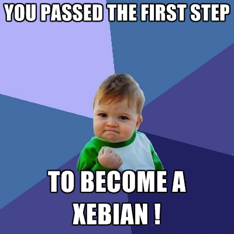

Coach Agile
Si vous êtes passé maitre dans l’art de décoller les post-its, si pour vous Kanban et Scrum
sont aussi des outils pour permettre aux organisations et aux personnes d’atteindre quelque
chose de plus grand, si lorsque vous entendez Agilité à l’échelle, vous pensez au
changement de culture et enfin, si vous pensez avoir votre place dans cette galerie de
portraits (Adopte un agiliste) ALORS le petit test suivant ne devrait pas vous poser de
problème.
On se retrouve après !
Testez-vous
Bravo !

! Vous l’avez compris, nous cherchons des coachs agiles expérimentés
notre équipe de passionnés.
Pour nous, l’intelligence collective est au cœur de nos pratiques
de travail et nous adorons travailler sur tous les domaines qui touchent à l’agilité.
En gros, chez Xebia, votre quotidien pourrait ressembler à ça :
- Mettre en place les pratiques agiles a tous les niveaux d’une organisation,
alternant des postures de coachs et de conseil
- Former vos interlocuteurs projets à l'agilité grâce aux supports de cours Xebia et à
des jeux d'apprentissage (Lean Lego Game, GetKanban, Scrum Game, ...)
- Accompagner les équipes de réalisation dans l'application des pratiques agiles
- Accompagner les métiers et product owners sur les problématiques d’innovation des
produits logiciels (Innovation Games, Lean StartUp, customer experience mapping, ...)
- Accompagner les métiers et product owners sur les problématiques d’innovation des
- Parler, argumenter et travailler avec le management pour les guider vers de
nouveaux horizons
- Participez aux cycles d'avant-vente en partenariat avec l'équipe commerciale et
alimentez les offres avec les références et cas client
- De partager ses connaissances via les XKE et via l'animation de groupes de
réflexion
- De travailler avec une équipe de coachs passionnés, et convaincus des bienfaits du
travail en équipe
- De contribuer à la notoriété et l'autorité de l’entreprise via la publication d'articles,
prise de parole dans les conférences spécialisées et les évènements
communautaires agiles
Si une larme d’émotion coule sur votre joue à la lecture de cette offre, ou si plus
simplement vous souhaitez en savoir plus, la suite est ici :
Prêt(e) à tenter l’aventure ?